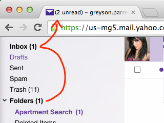

Have long folder names? Now you can see the whole thing.
Never miss an email with desktop notification and an unread count on your menu bar.
Yahoo! Mail usually only looks at your inbox to determine your unread count. Now you can include your auto-filtered email in that count too.
Note: This feature is turned off by default. It can be enabled in the options page.
Want to turn any of these features on or off, or change any other settings? Go to our options page.
Enjoy!